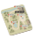

Here to walk a tour? Scan its code with your phone's camera, or open its link.
AR tours, on your phone, on site
You know a story about a place. Let people see it there.
You have a story to tell, or something to show. Here are the tools to put it on the spot, so your visitors experience it in the real world, through their phone.
Make the tour yourself, without programming. Walk there once with your phone and leave your words and pictures where they belong.
Tours run on Android phones with Chrome.

Welcome back. Pick up where you left off.
What would you like to do?
Walk a tour
Standing at the code? Point your phone's camera at it, and the tour opens by itself.
Have the tour's link, or its file on this device?
Build or edit at a computer
The editor shows a tour in 3D, on a big screen. Open this page at a computer, or send yourself its link.
How it goes
Your story, told in one walk.
Here is the whole of it, start to finish. Each picture shows what your phone, and later your visitor's phone, would show at that moment.
-
A story you know
It starts with something you know.
The old mill at the edge of the park turned for a hundred years. You know when it was built and what the stream drove, and somewhere you have a photo of it from 1910.
People walk past it every day and know none of this. You could tell them, right there, at the mill.
What you start with: a place, and something to tell about it. -
On site
Walk there with your phone.
Open the page on your phone and go to the mill. Stand where the story happened and hold the phone up. A ring on the ground shows the spot. Tap Place a pin, and a numbered station drops onto it.
You do not need anything printed for this. Placing works anywhere along your walk.
On your phone: the ring finds the ground, the station drops onto it. -
Words and pictures
Add what you know.
Type a title and a few lines. Take a photo there. They stay on that spot, standing in the air above the station, the way a sign would.
Then walk on to the next place that has a story, and do the same there. The words can be changed later, at a computer.
On your phone: a few lines and a photo, fixed to the spot. -
When it is ready
Hang a code where the walk begins.
At the end of your walk the tour is saved. Print its code on a sheet of paper, whenever the tour is ready, and hang it where the walk starts: on a gate, a post, a noticeboard.
Visitors scan it there to open the tour.
On your phone: the tour is ready, and its code goes up on the noticeboard. -
Your visitors
They scan it, and your stations appear.
Someone stops at the noticeboard and points their camera at the code. No app to install: the tour opens in their phone's browser.
They hold the phone up, and your station appears on the spot where you stood, with your words and your photo. Then the next one, as they walk.
On their phone: the tour opens in the browser, and station 1 appears on the path.
And at the mill they read what you wrote, beside the photo you kept.
Make your own tour
- Nothing to install
- It all runs in the browser
- No need to print a code while you build
- Lives in your own storage
- No sign-up, no account
- Keeps working without signal once a tour has loaded
The setup right below takes you through it, one step at a time, and its steps open in any order.
What people make with it
- A walk through the town's history. A local history group puts the old photos back where they were taken.
- A birthday treasure hunt. Parents hide the clues along the way, and the children find them through the phone.
- The castle tower, as it once stood. Visitors see the tower that is gone, on the spot where it stood.
- More about every painting. A small museum tells, beside each picture, what the label leaves out.
- The pond life trail. What lives in the water, shown at the bank where it can be found.
- A poem along the river. One verse at each bend, read where it was written.
- A sculpture path. An open-air exhibition puts the artist's first sketch beside each sculpture on the lawn.
-
Where your tour's file is stored
Your tour is one small zip file in your own storage. Visitors' phones load it from there; once it has loaded, it keeps working without signal.
- Download the empty starter tour below, and put it in your storage.
- Share it so anyone with the link can see it.
- Copy its share link; the next step asks for it.
Already have a tour zip on this device?
-
Paste your tour's share link
The link your storage gave you. Your printed code carries it.
-
Print your posters
A sheet with the tour's code, to print whenever the tour is ready.
-
Hang it where the tour starts
On a gate, a post or a noticeboard, where the walk begins.
-
Create it on site, in AR
Now the tour itself: start creating and walk the route, placing text pins and photos where they belong. When you are done, the tour file is saved to this phone.
Creating needs an Android phone with Chrome. Open this page there: scan this code with the phone.
The phone's camera opens here, in the real create flow.
-
Put the saved tour in place
This step opens by itself when you finish in step 5.
Prototype notes: V1, doors under the hero
The direction
The real start page, unchanged above and below, with one addition: right under the hero and its film, three equal doors. "Walk a tour" opens a small panel to open a tour by its link or file. "Make one on site" goes to the setup, storage first, in the real step 1 look. "Build or edit at a computer" opens the editor's entry (a stand-in here) with "Start a new tour", "Open a tour you have" and "Look at the example"; on a phone it first suggests a computer. The top line for visitors now points at the first door. A returning device opens at the doors instead of the setup.
What to try
- On a phone: scroll past the film to the doors; try "Make one on site" (setup, step 1) and "Walk a tour", then "From this device" and Start.
- At a computer: the doors show at the bottom of the first screen; "Build or edit at a computer" opens the editor's entry.
- The "Prototype" switch at the bottom left: device, returning device, AR check delay.
Measurements (headless Chromium, AR check delay 300 ms)
Scroll is the distance a reader scrolls by hand from the first paint at the top so that each next button is fully in view; taps count every button pressed. "Jump" is the distance the page moves by itself (door 2 to the setup). "Editor open" means a choice in the editor's entry was made; "Start creating" was reached in order through steps 1 to 4 (a storage tile, Continue, Next three times); "playing" means Start on the visitor screen after "From this device".
| Size | Device | Doors start at | To editor open | To Start creating | To playing the tour | Layout shift after the AR check (0 / 300 / 2000 ms) |
|---|---|---|---|---|---|---|
| 390x844 | AR phone | 1059 px (below the first screen) | 873 px, 3 taps | 515 px, 7 taps, jump 8449 px | 912 px, 3 taps | 0 / 0 / 0 |
| 390x844 | Phone without AR | 1059 px | 873 px, 3 taps | not offered: step 5 shows a code for an Android phone (515 px, 6 taps to it) | not possible: the visitor screen offers a code and Copy link (912 px, 2 taps) | 0 / 0 / 0 |
| 844x390 | AR phone | 756 px (below the first screen) | 721 px, 3 taps | 855 px, 7 taps, jump 4796 px | 822 px, 3 taps | 0 / 0 / 0 |
| 844x390 | Phone without AR | 756 px | 721 px, 3 taps | not offered (881 px, 6 taps to step 5) | not possible (822 px, 2 taps to the visitor screen) | 0 / 0 / 0 |
| 1000x620 | Computer | 519 px (row cut by the first screen) | 105 px, 2 taps | not offered (105 px, 6 taps to step 5, jump 5670 px) | not possible (335 px, 2 taps) | 0 / 0 / 0 |
| 1280x720 | Computer | 537 px (whole row in the first screen) | 0 px, 2 taps | not offered (0 px, 6 taps, jump 5387 px) | not possible (207 px, 2 taps) | 0 / 0 / 0 |
| 1440x900 | Computer | 545 px (whole row in the first screen) | 0 px, 2 taps | not offered (0 px, 6 taps, jump 5031 px) | not possible (36 px, 2 taps) | 0 / 0 / 0 |
Through the step dots instead of in order, "Start creating" takes 3 taps (the door, dot 5, Start creating); the page lets steps open in any order, so storage first is a suggestion there, not a rule. A returning device opens with the doors at the top of the screen (scrolled 1059 px at 390x844, 545 px at 1440x900) and no shift.
Weaknesses
- A choice before the story is read: on a computer the doors sit right under the hero, before the five story cards, and "Make one on site" then jumps 5000 to 8500 px over the story to the setup, so the door meant for makers skips the part that tells them how it goes.
- On a phone the doors are below the first screen (1059 px at 390x844, 756 px held sideways): the film comes first, so a visitor with a link still scrolls about 900 px before "Walk a tour".
- Three ways to the same setup: the hero's "Make your tour", door 2 and "Make your own tour" further down. Door 2 could replace the hero button, but the hero is meant to stay as it is.
- Equal doors give no hint which one fits the device: a computer shows "Make one on site" as large as the editor door, and the first two doors end at a code to scan there.
- A returning maker opens at the doors, one tap further from the setup than today, where a returning device opens at the setup.
- The long jump to the setup leaves the reader far from the doors; there is no way back up except scrolling.
The values it rests on
- Viewports 390x844, 844x390, 1000x620, 1280x720 and 1440x900; phones measured as both AR phone and phone without AR, the three larger sizes as a computer.
- Fonts are this machine's headless Chromium fallbacks; a phone's own fonts may change the heights, so the pixel numbers are a guide and no verdict rests on their exact value: the doors are well below the first screen at both phone sizes (by 215 px and more) and fully in it at 1280x720 and 1440x900.
- The film shows its drawn still, and the five cards keep their reserved picture boxes empty: the real page draws them with its own scripts, which this copy does not run. Their boxes are the real page's sizes, so distances match; the use cases are the short list the real page shows before its gallery loads (the real gallery is taller, which lengthens only the jump to the setup).
- Layout shift was swept over 13 widths from 320 to 844 px, AR check at 2000 ms, from the top and as a returning device scrolled to the doors: 0 everywhere, because every wording a door can switch to sits in the same box from the first paint.
- The codes drawn here are stand-ins, not readable codes. Nothing here starts AR, opens a file or copies a link.
Script size
The doors are plain markup and styles (about 9 kB of CSS); the prototype's own inline script, faking the switches and flows, is about 12 kB (about 3.5 kB gzip). Built into the app, the doors would add almost no script, far inside the landing's 250 kB gzip budget.